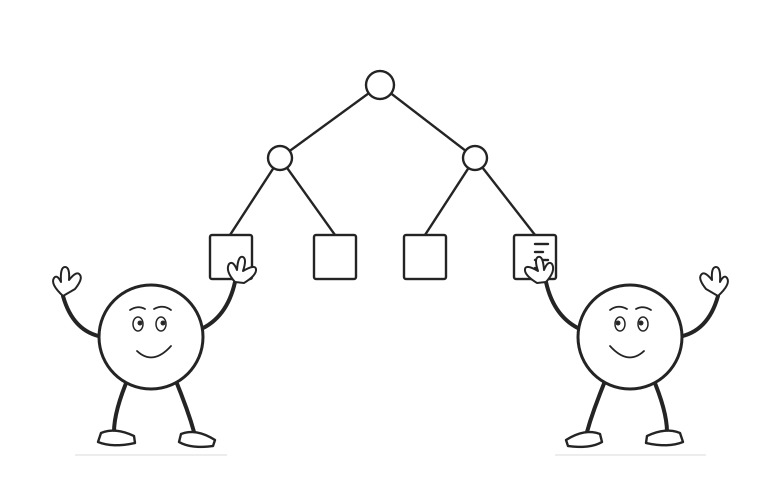

04 / Causal machine learning
Causal trees
Find differences in effects. Estimate them honestly.
Watch a covariate space become a tree, compare outcome and effect splits, and separate subgroup discovery from estimation.
Scroll to begin
Begin with a randomized information experiment. Compare split criteria, grow a small tree, and see why a separate estimation sample matters.
Choose the groups.
Then estimate their effects.
A causal tree represents treatment-effect heterogeneity with a partition. Its objective balances effect differences and precision. Honest estimation keeps the outcomes used to choose that partition separate from the outcomes used to estimate its leaf effects.
Read the complete explanation, calculations, and assumptions ↗
Sources and further reading
- Athey and Imbens (2016). Recursive partitioning for heterogeneous causal effects.
- Athey and Imbens (2016). Published article and supplementary material.
The main arithmetic example has 64 constructed observations, two covariates, equal treatment and control counts, and treatment effects of 6 or 2. A second fixed realization supplies honest estimates of 6.4 and 1.8. A clearly separate constant-effect example demonstrates selection on noise. These are chosen realizations of a hypothetical randomized experiment, not empirical findings, fitted software output, or a coverage simulation.